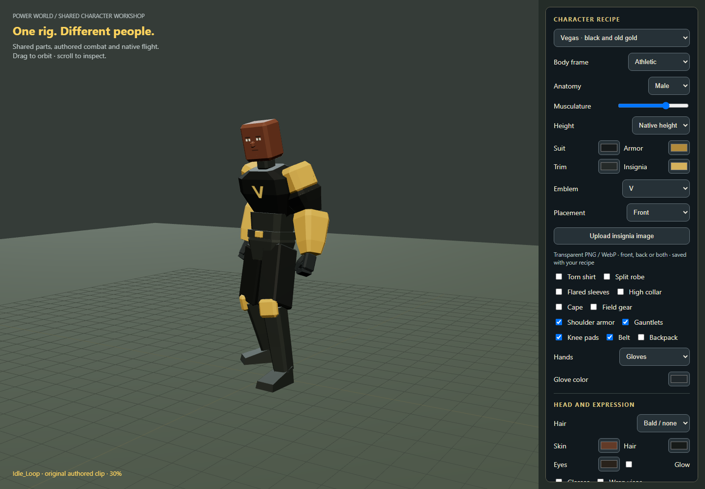
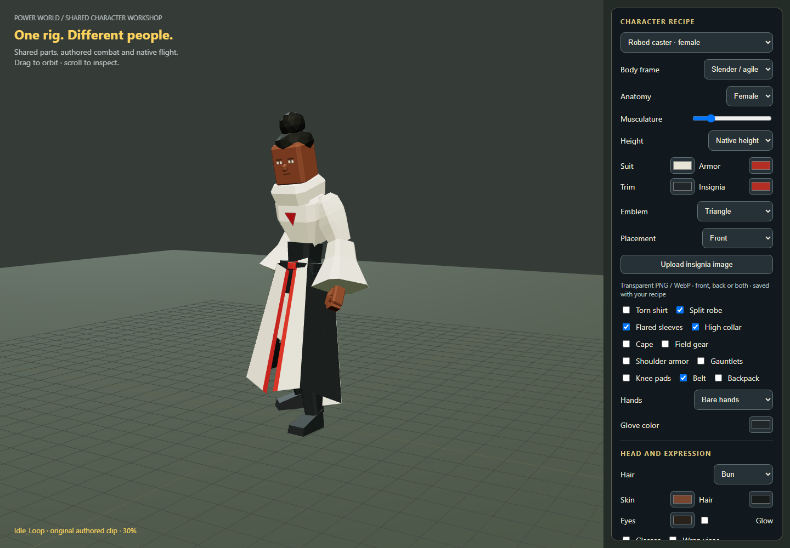
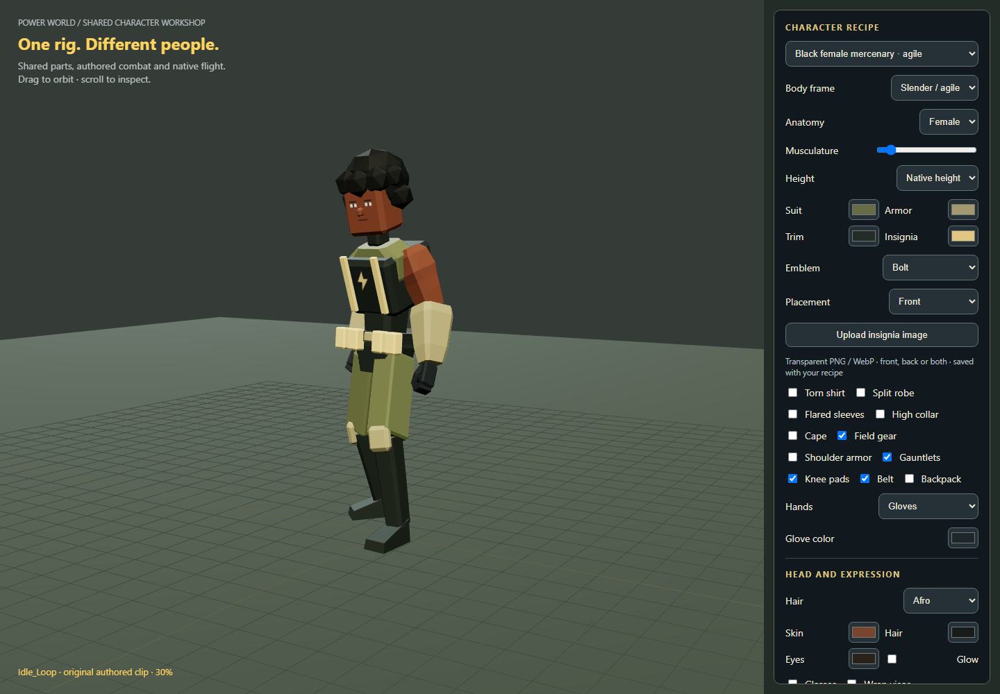
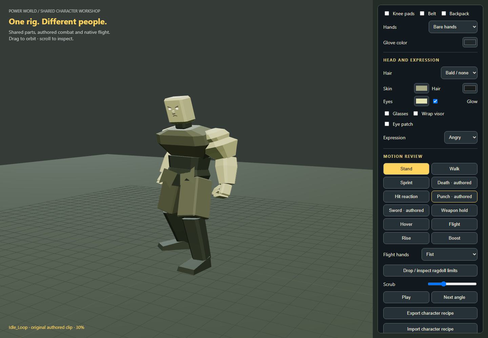
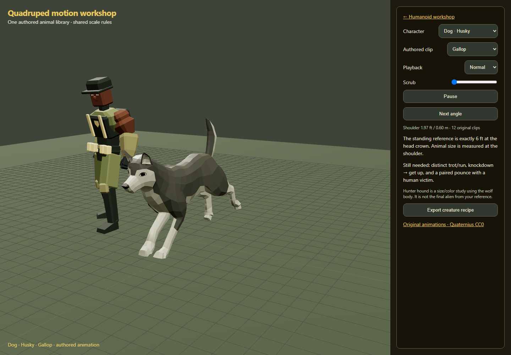
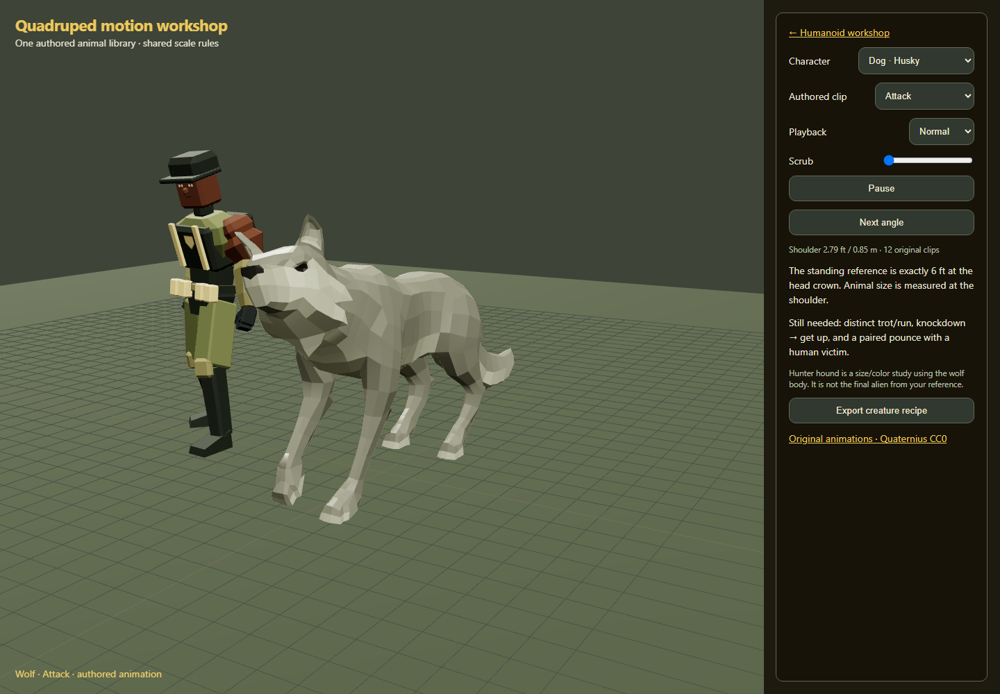

Shared humanoid parts and authored animal clips. Existing flight is preserved.
Humanoid workshop · Quadruped workshop · Remaining family work






Animals need paired pounce, get-up, distinct run/trot and gameplay integration. Thermavari digitigrade skeleton and original alien quadruped are not yet built.